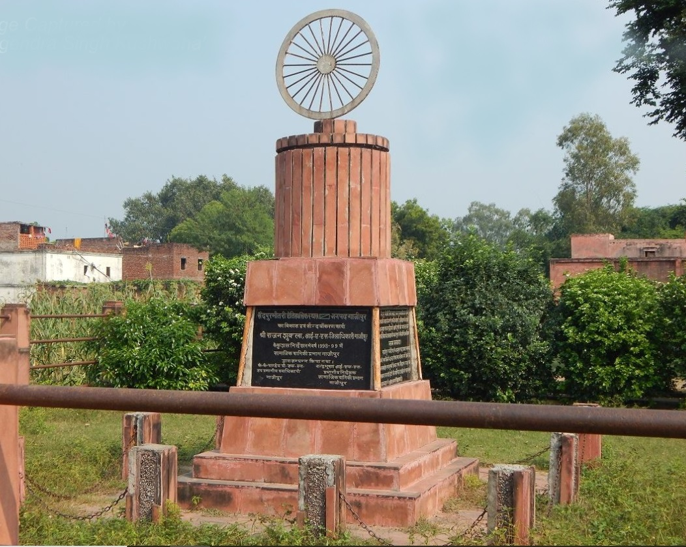
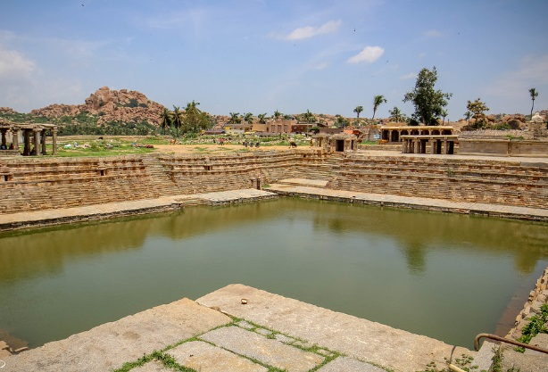

Ghazipur is famous for production of unique Rose Scented Spray called 'Gulab Jal'and
Opium factory of Ghazipur is producing the drug for the global pharmaceutical industry.
it is also known for Major crops are paddy, maize, pigeon pea, jowar and Bajra in Kharif season
wheat, barley, lentil, toria, mustard, field pea and winter vegetables in Rabi season.
Ghazipur is famous for production of unique Rose Scented Spray called 'Gulab Jal'and
Opium factory of Ghazipur is producing the drug for the global pharmaceutical industry.
it is also known for Major crops are paddy, maize, pigeon pea, jowar and Bajra in Kharif season
wheat, barley, lentil, toria, mustard, field pea and winter vegetables in Rabi season.
- Places of interest-
- Aunrihar-
- Saidpur-
- Zamania-
- Gauspur-
Aunrihar is situated in lat. 25° 32′ N and long. 83° 11′ E on the main road leading from Varanasi to Kushinagar on NH 29, about 42 Km. west from Ghazipur city and about 3.2 km. from Saidpur.This place is archaeologically interesting . One of the oldest and most important sites in the district is the belt having collection of mounds stretching from Saidpur to Aunrihar. The whole surface of the ground of Aunrihar is strewn with fragments , large carved stones & fine pieces of sculpture which are being utilised as common building stone. Every few yards traces of masonry wall appears.
The saipur town is situated on NH 29 just 30 km from Ghazipur. In the town there are two muslim dargah , one being a small domed building resting on the square pillar. The other are a larger and more remarkable structure with a massive roof of a stone. These town buildings might represents Chaiyas attached to Buddhist monastery.one of being the tomb of Sheikh Samman, who died in 1595 and other are makhdoom Shah.
It is an old ,high bank of Ganga about 16 Km.south from Ghazipur. The Town was founded in 1560 by Ali Quli Khan, The governor of Jaunpur and named after his title , Khan Zaman. According to Hindu tradition , it derived the name of Jamadagnia from the Rishi Jamadagni.The Lathiya3 Km, from southeast of the town , there s lathiya pillar,that is circular monolith of polished sandstone 50 cm. diameter and about 6mt. in height. There is bell-shaped capital and above this is a group of eight lions facing outwards.
The tank in which tha Raja Mandhata bathed is still pointed out on the eastern border of the village and it has ever since been the resort of the persons similarly afflicted. The Raja’s fort was as Kathot and adjacent village on the east.Both in Ghauspur and in Kathot are to be found traces of an Hindu civilization, large masses of stone and old bricks have been discoveredand in the temple are to be seen several striking pieces of Hindu sculpture.
